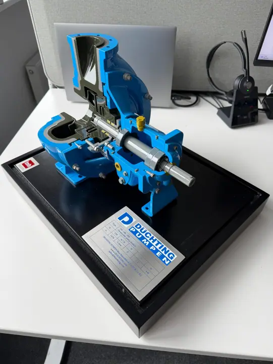

Como são fabricadas as maquetes profissionais?
Do CAD à maquete final

As maquetes profissionais à escala são fabricadas através de uma combinação de engenharia digital, fabrico de precisão, montagem manual especializada e acabamentos minuciosos.
Embora a maquete final possa parecer um objeto único, uma maquete complexa de arquitetura, naval, industrial ou de engenharia pode conter centenas ou milhares de componentes fabricados individualmente.
O processo começa muito antes de ser produzido o primeiro componente físico.
1. Informação do projeto e análise técnica
A primeira fase consiste em compreender o projeto.
Consoante o tipo de maquete, o fabricante pode receber:
- desenhos CAD;
- modelos 3D;
- informação BIM;
- desenhos de engenharia;
- desenhos de arquitetura;
- renders;
- fotografias;
- referências de cor;
- especificações técnicas.
A equipa de fabrico analisa a informação para compreender a escala pretendida, as dimensões físicas, a complexidade, o nível de detalhe e a utilização prevista.
O fabricante precisa também de conhecer o prazo final e os requisitos de entrega.
2. Seleção da escala
A escala adequada é definida em função do projeto.
Os fatores incluem:
- dimensões do projeto original;
- espaço de exposição disponível;
- nível de detalhe pretendido;
- distância de observação;
- dos requisitos de transporte;
- objetivos da apresentação.
Em grandes empreendimentos, uma escala menor pode permitir representar uma área extensa numa superfície física gerível.
Em pequenos componentes de engenharia, pode ser necessária uma escala maior para revelar detalhes internos ou mecânicos.
3. Preparação CAD e CAM
A informação de projeto digital é convertida em informação de fabrico.
Os dados CAD ou 3D originais podem exigir preparação, segmentação, modificação ou reconstrução antes de ser possível fabricar os componentes individuais.
É aqui que o modelo digital se torna um modelo de produção.
A equipa de fabrico determina:
- que componentes devem ser maquinados;
- quais devem ser cortados a laser;
- quais devem ser impressos em 3D;
- que materiais devem ser utilizados;
- como devem ser montados os componentes;
- como devem ser integrados a iluminação e os sistemas elétricos.
4. Seleção de materiais
As maquetes profissionais à escala podem combinar vários materiais.
Consoante a aplicação, estes podem incluir:
- acrílico;
- PVC;
- ABS;
- alumínio;
- aço;
- cobre;
- contraplacado;
- materiais impressos em 3D.
A seleção de materiais depende do aspeto pretendido, da geometria, da resistência, do processo de fabrico e dos requisitos de acabamento.
Utilizar um único material em todos os componentes raramente é a melhor solução.
5. Fabrico de componentes
Uma maquete à escala complexa é normalmente fabricada como um conjunto de componentes individuais.
As diferentes tecnologias são escolhidas em função da geometria e do material.
Maquinação CNC
A maquinação CNC pode ser utilizada em componentes que exigem dimensões precisas, repetibilidade e geometria controlada.
Corte a laser
O corte a laser é indicado para produzir com precisão chapas, painéis e outros componentes com perfis detalhados.
Impressão 3D
A impressão 3D pode ser utilizada em geometrias complexas e em componentes que seriam difíceis ou pouco eficientes de fabricar por métodos convencionais.
Fabrico manual
Nem todos os componentes devem ser fabricados digitalmente.
Os maquetistas especializados continuam a ser essenciais no fabrico, montagem, acabamento e nos detalhes que exigem trabalho artesanal.
6. Pintura e acabamento de superfícies
Depois de fabricados, os componentes podem ser pintados e acabados de acordo com as referências do projeto.
Esta fase é particularmente importante em maquetes de arquitetura e navais, onde a cor, o aspeto das superfícies e a diferenciação de materiais contribuem significativamente para o realismo.
O acabamento pode também ajudar a distinguir materiais e áreas funcionais numa maquete industrial ou de engenharia.
7. Montagem manual
Os componentes fabricados são então montados para formar a maquete completa.
Consoante o projeto, isto pode envolver:
- edifícios;
- fachadas;
- conveses;
- maquinaria;
- tubagens;
- paisagismo;
- veículos;
- embarcações;
- equipamento técnico;
- infraestruturas.
Projetos complexos podem exigir uma montagem manual extensa, pois as peças individuais têm de ser posicionadas com precisão e consistência.
8. Integração de iluminação e sistemas elétricos
As maquetes profissionais à escala podem incorporar sistemas elétricos e iluminação LED.
A iluminação pode ser utilizada para destacar:
- edifícios;
- ruas;
- interiores;
- espaços públicos;
- equipamento industrial;
- sistemas de navegação;
- áreas selecionadas de um plano diretor.
Os sistemas elétricos devem ser incorporados durante o processo de fabrico, para que a cablagem, os sistemas de controlo e os requisitos de acesso sejam devidamente considerados.
9. Funcionalidades interativas e digitais
Uma maquete física pode também tornar-se um sistema de comunicação interativo.
Consoante a aplicação, a TNBuilt West pode integrar tecnologias como:
- iluminação LED;
- ecrãs digitais;
- ecrãs táteis;
- projection mapping;
- controlos interativos;
- elementos de realidade virtual ou digital.
Esta abordagem é particularmente útil em exposições, centros de visitantes, museus, espaços de venda e apresentações de grandes empreendimentos.
10. Controlo de qualidade
O controlo de qualidade deve acompanhar todo o projeto, e não apenas a fase final.
Consoante o projeto, podem ser utilizadas fotografias e vídeos do progresso para permitir ao cliente acompanhar o fabrico à distância.
Na fase final, a maquete concluída é inspecionada quanto a:
- precisão dimensional;
- posicionamento dos componentes;
- acabamento das superfícies;
- cor;
- iluminação;
- funções elétricas;
- qualidade de montagem;
- apresentação geral.
Quaisquer correções necessárias podem ser feitas antes da aprovação final.
11. Embalagem e entrega internacional
Uma maquete profissional concluída tem de ser transportada sem comprometer o trabalho realizado durante o fabrico.
Por isso, a embalagem faz parte do projeto.
Maquetes de grandes dimensões ou complexas podem exigir embalagens de proteção especializadas e construção modular para tornar o transporte e a instalação viáveis.
A entrega internacional exige também uma logística adequada e documentação aduaneira.
12. Instalação
A maioria das maquetes é entregue como unidade completa.
As maquetes de grandes dimensões podem ter de ser montadas no destino final.
A instalação pode incluir:
- posicionamento da maquete;
- montagem das secções modulares;
- ligação dos sistemas elétricos;
- instalação de vitrines de proteção;
- teste da iluminação e das funcionalidades interativas;
- ajustes finais de apresentação.
Muito mais do que uma miniatura
Uma maquete profissional à escala não é simplesmente uma versão mais pequena do objeto original.
É um produto fabricado por direito próprio.
O fabricante tem de interpretar a informação de base, selecionar materiais, planear a produção, fabricar os componentes individuais, montá-los com precisão, integrar sistemas técnicos e entregar a maquete final em segurança.
Por isso, os melhores fabricantes de maquetes profissionais à escala aliam capacidade de engenharia, tecnologia de fabrico digital e trabalho artesanal especializado.
Capacidade de fabrico da TNBuilt West
A TNBuilt West combina fabrico digital com experiência profissional em maquetismo para produzir maquetes por medida para:
- arquitetura;
- imobiliário;
- setor naval;
- petróleo e gás offshore;
- energia;
- planeamento urbano;
- instalações industriais;
- engenharia;
- maquinaria e componentes técnicos.
O processo de fabrico pode incluir preparação CAD/CAM, maquinação CNC, corte a laser, impressão 3D, pintura, montagem manual, integração LED e elétrica, controlo de qualidade e embalagem profissional.
O processo exato é adaptado aos requisitos de cada projeto.
Se dispõe de ficheiros CAD, desenhos, renders ou informação técnica de um projeto, a TNBuilt West pode analisar essa informação e desenvolver uma abordagem de fabrico adaptada à escala, ao nível de detalhe e à aplicação final pretendidos.
Ir para o próximo guia:“O guia completo das maquetes profissionais”